| This is what the score looks like. It can be viewed by selecting Animation -> Show Score from the top menu bar, or by grabbing the drag bar at the very bottom of the window and moving it up. The scale along the top shows the time in seconds. Down the left hand side is a list of currently selected objects together with their animation tracks, if any. In this example, there is an object called 'hand' which has position and rotation tracks. | 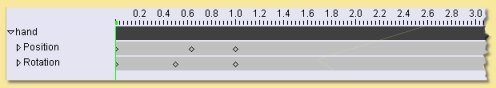 |
| 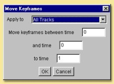 | Move..
allows a block of keyframes to be moved to another point in time. The
dialogue on the left is displayed. The operation can be applied to All
Tracks, All Tracks of Selected Objects or
All Selected Tracks. You can then specify the time points between which you want keyframes to be moved from and the time you want to move them to. Note: any existing keyframes in the region that is copied to, will be overwritten. Copy .. is similar to Move .. but the original keyframes are retained as well as new ones created at the copy to position. |
| 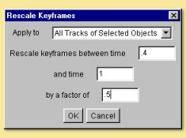 | Rescale..
allows keyframes between a specified range to be rescaled in respect of
time. In this example,
the keyframes between 0.4 and 1.0 seconds are rescaled by a factor of
0.5 which compresses the keyframes
so that they happen in half the time. 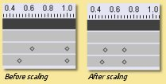 |
| 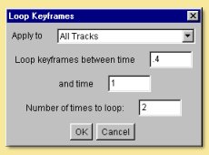 | Loop..
allows keyframes between a specified range to be repeated a defined
number of times.
The dialogue allows entry of the range and the number of loops. The new
keyframes are then added to
the end of the range specified as in the example below: 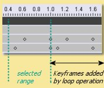 |
| 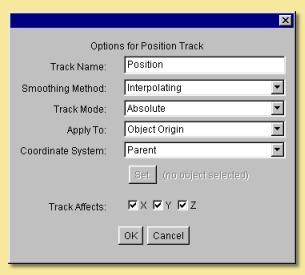 | At the
top is the Track Name
which can be altered to anything you like. Next is the Smoothing Method. To understand this better, let's add another keyframe to the above animation. Move the time marker to 0.5 secs, select the position track and click on Animation -> Keyframe Selected Tracks. Note that in this situation, Keyframe Modified Tracks of Existing Objects wouldn't have worked because the position of the box at this point is no different than it was before. Having created the keyframe, we can go to the plot view in edit mode and move the new point as shown below:
|
| 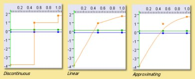 | In
terms of the effect on the animation, Interpolating
and Approximating produce a gradual deceleration of
the box. With Approximating method, both velocity
and acceleration
are continuous whereas the acceleration changes discontinuously with Interpolating.
This
results in a smoother animation for the Approximating
method. Discontinuous produces a sudden change in position. Linear produces a box moving at constant speed up to the second keyframe, then a slower constant speed to the final position. All have their uses in different situations. |
| For
example, we can add a Position track to the animation above and select Relative
Mode for it. We need to make sure it sits above the Absolute position
track because transformations get applied from the bottom up. We could then use the Relative track to add displacements to the main motion of the cube, e.g. make it shake as it moves. In this example, the Relative track was keyframed every 0.2 secs using Animation -> Keyframe Selected Tracks . The x and y coordinates of the resulting keyframes were then moved to 'random' positions in the plot view. The effect is that the Absolute position on the cube is initially determined from the Absolute track; then the Relative track displaces the x and y positions by the coordinates specified. |
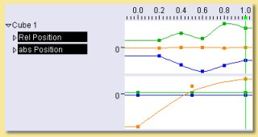 |
| 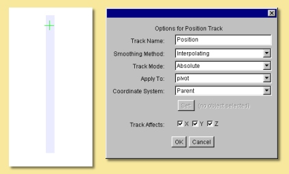 | 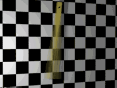 |
| 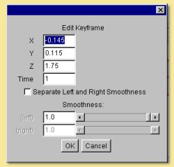 | The
first 3 entries allow the alteration of the objects position in each of
the 3 axes in the defined
coordinate system. This is a way of more accurately specifying
positions as opposed to editing on the
plot view. The next entry is for Time allowing you to specify explicitly the time position of the keyframe. The lower half of the dialogue allows further refinement of the Smoothing Method. For Interpolating and Approximating smoothing methods, the curve can be given a Smoothness value which determines how smooth the curve is. In addition, the part of the curve to the left of the keyframe (i.e. the time period before the keyframe) can be set to a different Smoothness than the curve to the right of the keyframe (i.e. the time period after the keyframe). |
| 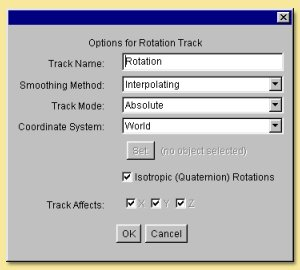 | Most
of the settings are identical to the Position Track options. See
this section for details. Note that with Rotations, a child object or an object set to another object's coordinate system will need to have both Position and Rotation tracks in place and set to the appropriate coordinate setting in order to work properly. The only difference, in fact is the Isotropic (Quaternion) Rotations option. Switching this on means that the end point of the rotation is more important that the process of rotations involved in getting there. The program does not necessarily follow the specified rotation values in each axes but gets to the endpoint by the shortest path possible. For example, if you set a rotation of 270 degrees in the z-axis, Art of Illusion actually treats this as -90 degrees if quaternion rotations are turned on. Therefore, if you need to set a rotation greater than 180 degrees in any axes, you need to switch this option off. Bear in mind, however, that if you do this, that the x, y, and z rotations are then performed independently in this order: z, x, y and the animation might not do what you expect. In this situation it is best to rotate only one axis at a time and use parent-child coordinate systems to carry out more complicated rotations. |
| 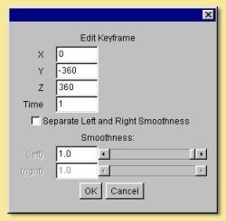 | The
first 3 entries allow the alteration of the objects orientation in each
of the 3 axes in the defined
coordinate system at the point in time of the keyframe. As with the keyframes in the Position Tracks, the smoothness of the orientation vs time curves before and after the keyframe can be set. |
| 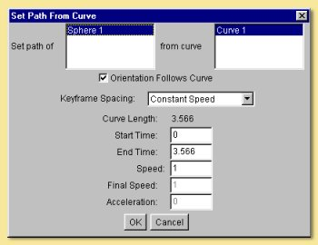 | Here
you can select the object and curve (if more than one were selected
initially) to use. You can also specify whether the orientation of the object should follow the curve or remain fixed. In the latter case, no Rotation Track will be produced. There are 3 options for Keyframe Spacing: Uniform Spacing, Uniform Speed or Uniform Acceleration. Depending on which you set, there are then additional parameters that can be specified: Start Time and End Time define how quickly the object moves along the curve. If Uniform Speed or Uniform Acceleration is selected, then these values will depend on speed and/or acceleration which can be specified in the remaining dialogue boxes. |
| 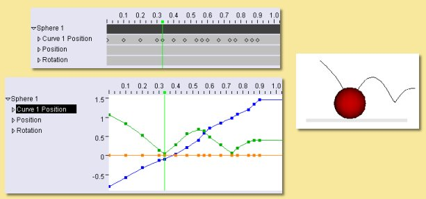 | 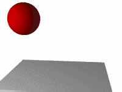 |
| Consider
the example of a ball being thrown into the air upwards (y-axis) and
along the x-axis. The physical equations describing this projectile
motion tell us that the distance in the x-direction is given by x
= u t cos a
where u is the velocity (which we'll assume for the
moment is constant) t is the time
and a
is the angle from the horizontal as shown on the figure on the right: The distance along the y-axis is given by y = h + u t sin a - 0.5 g t2 where h is the initial height and g is the acceleration due to gravity (= 9.81 m/s2) |
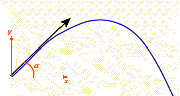 |
| 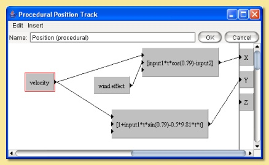 | Here,
I have introduced the new parameter wind effect
which is Input2 to the expression controlling
the x displacement. The expression has been slightly modified to add a
subtraction of the wind effect
from the x position. This is a very simplistic simulation that will
enable us to specify how far the
wind is pushing back the ball. Now, we can keyframe this parameter by moving the time marker to a certain time point and selecting Animation -> Keyframe Selected Tracks . This produces a keyframe at the current time position on the score. Double-clicking the keyframe displays a dialogue box that allows the value of the keyframe to be specified as shown below: |
| 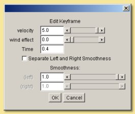 | Here,
the value of the parameter can be set for the particular point in time.
The value of the parameter
at any point in time will then be interpolated between keyframed values
using the type of smoothing
selected from the Properties menu option in the procedure editor. As before, the smoothing value can be specified if the smoothing method is interpolating or approximating and the left and right smoothness can be separately defined. Specifying the value at a number of time positions produces the simplistic wind effect shown on the right. Clearly, more sophisticated and realistic simulations could be produced. |
| 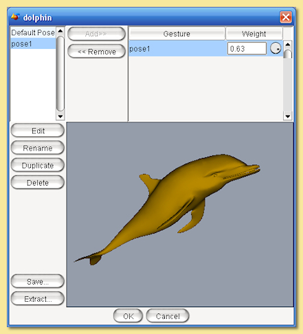 | On the
left hand side is a list of defined 'gestures' which are particular
instances of the mesh. At first there is only one: Default Pose which
is
the object in the position in which it was created. This gesture cannot
be deleted. To create a new gesture, select this default pose and click
on Duplicate.
Enter a name when prompted and this will add a new gesture to the list
and open up the object editor to allow the object to be edited in much
the same way as normal
except that you will not be able delete any vertices or add any new
ones by extruding or subdividing. Once the mesh has been edited, click on OK to update the new gesture. To assign a gesture from this list to the current time, select it and click on 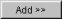. This adds the gesture to the Current Pose list. This list defines how the mesh looks at that moment in time: The final pose is the weighted sum of all the gestures in this list, treating these gestures as displacements from the default pose. You can set the Weight by selecting the gesture in the Pose list and typing a Weight value in the box beneath the list. Or you can simply add a single gesture to the list and click OK. If you look at this dialogue at a point in time between 2 keyframes, you will see that the Weight of each gesture will have been calculated accordingly. It is also possible to set negative Weight values. There are 2 other options available from this dialogue; Save allows you to create a new gesture which is equal to the current weighted average of the gestures in the Current Pose list. |
| 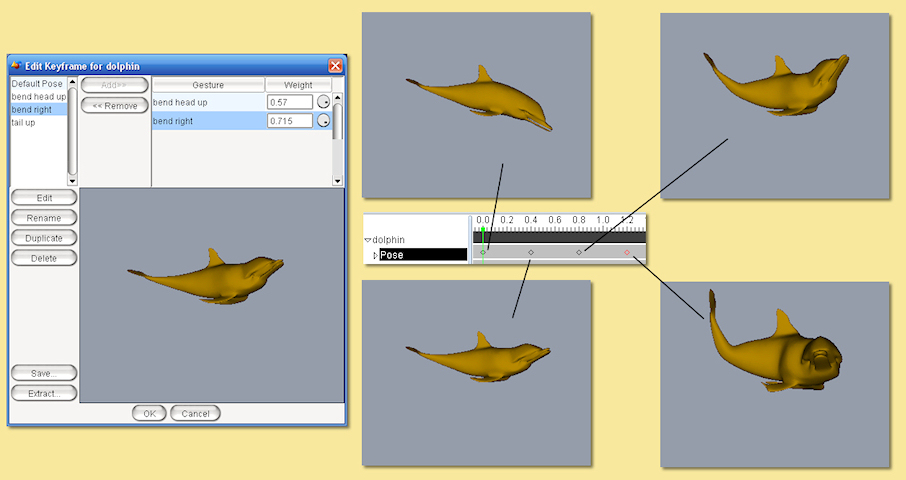 | 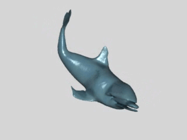 |
| 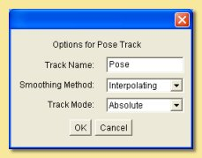 | The
options are fewer than for the rigid transformation tracks. The Track Name can be changed to any name of choice. The Smoothing Method refers to the way the parameter is interpolated between frames. In the case of mesh objects, the relevant parameter is the Weight of the various gestures making up the pose. See above for details on the different smoothing methods. |

| The Track
Name can be changed to anything you like and will appear in
the track list on the score. The Smoothing Method defined the way that bend angles are interpolated between keyframed values. The options are detailed above. The Bend Axis is the axis away from which the object bends. The Bend Direction determines in which direction the object bends away from the axis specified by the Bend Axis. Reverse Bend Direction alters the way in which the object bends, with the opposite end being fixed and the other end undergoing the bend. The Coordinate System determines whether the bend axis and direction are defined from the object's coordinate system or from the scene origin and orientation. |
| Here
you can set the required Bend Angle in degrees and
the Time. If either Interpolating or Approximating smoothing was specified in the track options dialogue then the Smoothness value can be specified. The Smoothness of the curve before the specified time can also be made different to that after the time by ticking the Separate Left and Right Smoothness box. |
| It
looks a little complicated but really it's quite simple. First of all, there are 2 parameters that have been set up: bulge height which defines the length of the object affected and bulge size which is the scaling applied to that part of the object as below: The bulge is going to be centred on the object's y-axis, i.e. at y=0. The first function is '>'; this returns 1 where the magnitude of y is less than the bulge height and 0 elsewhere. This is fed into the scaling function expression where it is multiplied by (1 + bulge size)*x. Thus the value of this expression for the part of the surface outside the bulge height is 0. However, we want to scale the surface at this part of the object by a factor x, not 0, hence the + function. This adds onto the scaling factor another expression which is equal to x for the part of the surface outside of the bulge height. Inside the bulge region, the scaling factor is simply (1 + bulge size)*x; the value of the second expression is 0 inside the bulge height so it doesn't add anything onto the first expression. This is repeated for the z-direction with 2 expressions with x simply substituted with z. To set an acceptable range of values and a default value for the parameters bulge height and bulge size, double-click the modules and enter the values. |
| The Edit
menu at the top of the procedure editor contains an Undo/Redo facility
and a control
on the properties of the track as shown on the right: The Parameter Smoothing Method is the type of smoothing used between keyframed values of the parameters. See earlier for a full description of these smoothing types. The Coordinate System can be set to either Local or World to use either the object's own coordinate system or that of the scene. |
| This
dialogue lists all procedural parameters at the top with slider bars
allowing their values to be
set for that particular time. If the Parameter Smoothing Method was set to either Interpolating or Approximating in the track properties then the Smoothness can be set in this dialogue and can be made different for the interpolations before and after this timepoint. This is the final animation made by setting 4 keyframes and varying only the bulge size parameter. |
| The Track
Name can be altered to anything you like. The Smoothing Method is the way in which the scaling factors are interpolated between keyframes. The options here are the same as described above. The Coordinate System determines whether the Local coordinate system or the World coordinate system is used. If the latter is used, the object is scaled with respect to the axes passing through the scene origin rather than that passing through the object's centre. |
| The
scaling factors are set explicitly in the X-Scale, Y-Scale,
Z-Scale boxes. If either Interpolating or Approximating smoothing was set in the track options dialogue, then it is possible to set the smoothness and to separate the smoothnesses of the interpolation before and after the point in time. |
| The Track
Name can be altered to whatever you like and appears in the
track list. The Start Time is the time at which you want the explosion to begin. The track has no effect until that time. Maximum Fragment Size - The fragments are all the same size. There is no minimum size as AoI subdivides the surface triangles until the required size is reached (note, however, that performance is affected as the fragment size decreases). There is a maximum size, however, depending on the surface geometry. A cube, for instance, can have larger fragments than a sphere because a cube's surface can be represented by larger triangles whilst still maintaining the required surface accuracy. This option allows you to restrict the size of the fragments for such objects. Explode Speed is the initial speed at which the fragments move outwards. Fragment Spin Rate determines how fast the fragments spin. Disappearance Time - If this is set to anything other than 0, the fragments will disappear at random over time. The time set here is that at which all fragments will have disappeared. Gravity sets the magnitude of the force acting on the fragments. |
| The object used in this example is a pyramid created by extruding a flat spline and then scaling the extruded vertices down to a point. In order to get a smoother distortion, the mesh was subdivided a couple of times to give the mesh see on the right: |
| The Track
Name can be altered to anything you like. The Smoothing Method is the way in which the values of twist are interpolated between keyframes. The options here are the same as described above. The Twist Axis is the axis around which the object is twisted Reverse Twist Direction twists the object the opposite way so that the other end is static. The Coordinate System determines whether the Local coordinate system or the World coordinate system is used. If the latter is used, the object winds itself around the axis passing through the scene origin rather than that passing through the object's centre. |
| The Twist
Angle controls the amount of rotation around the specifed
axis at the given Time. If either Interpolating or Approximating smoothing was set in the track options dialogue, then it is possible to set the smoothness and to separate the smoothnesses of the interpolation before and after the point in time. |
| The editor is similar to the mesh editor except
that manipulations can be made to the mesh only via
the skeleton and not the mesh vertices. The Edit menu allows one
level of Undo. Edit ->
Properties displays the Properties dialogue which allows
left/right smoothnesses to be set as per other tracks. The Skeleton menu is shown on the image on the right: Edit Bone accesses the bone joint editor (see here). Reset to Default Pose puts the keyframe's skeleton back into the Default Pose configuration for that object. Create Pose from Gestures displays the current list of gestures (the option will not be available if the object is not an Actor) and allows the Skeleton Shape keyframe to be created effectively from a custom pose made up from a sum of various weightings of gestures. The View Menu is identical to the equivalent menu in the mesh editor. |
| The Track
Name is editable as with other tracks as is the Smoothing
Method. The Use Gestures to Shape Mesh is analogous to the Inverse Kinematic distortion tracks. The Skeleton Shape tracks distort a mesh based only on skeleton movement. In some situations, relying on skeletal deformation alone can lead to problems with the mesh becoming 'squashed' - this is particularly common around some joints, for example. However, if you create a gesture with the skeleton in a similar configuration to that expected to arise in the Skeleton Shape track, the vertices of the mesh can be moved to smooth out these problems for that gesture. Then, switching on Use Gestures to Shape Mesh for the Skeleton Shape track will automatically sort out these problems. Indeed, if you create a Skeleton Shape keyframe and edit it with this option switched on (with appropriate gestures created), the 'unsquashing' effect is actually applied in real time. |
| Below
the editable Track Name, there are 3 rows that
define the way the object is positionally constrained. For each axis,
the Constraint can be selected as None,
Less Than, Equal to or Greater
Than the value (in units) defined. Setting the X-Constraint
to be Less Than 3, for example, means that the
object will never go beyond the plane x=3. The Orientation is constrained by the next section. Here you can specify that one axis (in the objects coordinate system) either Faces Toward an object (or one of the joints of its skeleton if it has one) of your choice selected by clicking the button, or can be set to be Parallel to or Perpendicular to a vector set in the x,y and z boxes which then appear as below: |
| Here, you can set the object to be visible or not and the time. |
| Track
Name is the name of the track which can be changed to
anything you like. Smoothing Method is as defined above. In this case the values of the parameters are smoothed as specified. In the area below is a list of all the currently defined texture parameters in the object's texture. Here you can select which parameters to control via this animation track. Multiple selections are made by holding down the <shift> key while clicking on entries in the list. |
| Listed
at the top of the window are all the parameters that were identified in
the previous
dialogue. In this example, there are 2 texture parameters called
parameter and trans. Their
values at this point in time can be altered using the slider bars or by
typing values into the
boxes. The Time can also be re-defined here. The remainder of the dialogue relates to smoothing before and after the keyframe which can either be the same or be separately defined. Smoothness values are entered appropriately and are valid if either interpolating or approximating smoothing was selected in the previous dialogue. The plot views can also be used to show plots of each parameter against time. |
Press the center button to start and stop animating the scene. The left and right buttons jump to the time of the very first or very last keyframe on any object. You can adjust how quickly the animation plays by dragging the slider.
If you want more precise control over how the animation is previewed, you can use the Animation -> Preview Animation
command. This displays a dialogue similar to that below:
| The Camera
drop down menu allows you to view the preview from any camera that
exists in the scene. The Display Mode drop down menu allows you to select the type of display for the preview from Wireframe, Shaded, Smooth or Textured. The Start Time and End Time specify the time period over which the preview will play. The Width and Height are the dimensions in pixels of the preview window. The Frames/sec controls the smoothness of the preview; the higher the number of frames per second, the more interpolated positions are created and the smoother the animation becomes. |
| To
render an animation rather than a still, click on the Movie
radiobox. You can then specify the Start Time and End Time over which to render. |
| The Quality
determines the amount of compression in the image. A high Quality value
will look
better but will result in a larger file size. If you select either TIFF, JPEG, PNG, BMP or HDR the animations will be saved as individual frames in the specified image format. Selecting one of these and clicking OK will display the filename dialogue. Each frame rendered as part of the movie will have the filename you enter here with an extension relating to the frame number, e.g. filename0001, filename0002 etc.. The starting number can be changed via the dialogue shown on the left; the default value for this is calculated according to the start time. Alternatively, animations can be produced in the Quicktime format by selecting the appropriate option. Note that you need to have Java Media Framework installed for this to work. See the Installation page for details. |